0 概率论相关公式
高斯分布：\(f(x)=\frac{1}{\sqrt{2\pi}\sigma}\exp(-\frac{(x-a)^2}{2\sigma^2})\)
误差函数；\(erf(x)=\frac{2}{\sqrt{\pi}}\int_0^xe^{-t^2}dt\)
- 自变量的递增函数
- \(erf(0)=0\)，\(erf(\infty)=1\)，\(erf(-x)=-erf(x)\)
互补误差函数；\(erfc(x)=\frac{2}{\sqrt{\pi}}\int_x^{\infty}e^{-t^2}dt\)
- 自变量的递减函数
- \(erfc(0)=1\)，\(erfc(\infty)=0\)，\(erfc(-x)=2-erfc(x)\)
- 近似：当x较大（x>2）时，\(erfc(x)\approx \frac{1}{x\sqrt{\pi}}e^{-x^2}\)
误差函数 & 互补误差函数：\(erfc(x)+erf(x)=1\)
贝叶斯公式：\(P(x_i/y_j)=\frac{P(x_i)P(y_j/x_i)}{\sum_{i}^{n}P(x_i)P(y_j/x_i)}\)
4 信道
自由空间的传播损耗：若将发射机输出功率与接收机输入功率之比定义为传播损耗，则可以表示为下式。\(L_{fr}\)为自由空间传播损耗，\(P_T\)为发射机输出功率，\(P_R\)为接收机输入功率，\(d\)为距离，\(\lambda\)为波长，\(G_T\)为发射天线增益，\(G_R\)为接收天线增益。
\[
L_{fr}=\frac{P_T}{P_R}=\frac{16\pi^2 d^2}{\lambda^2 G_T G_R}
\]
线性时变网络：最基本的调制信道有一对输入端和输出端，输入端信号电压\(e_i(t)\)与输出端电压\(e_o(t)\)关系如下式。\(n(t)\)为噪声。
\[ r(t)=s_o(t)+n(t)=f[s_i(t)]+n(t) \]
- \(s_o(t)=c(t)*s_i(t)=f[s_i(t)]\)
- \(n(t)\)为加性干扰，始终存在
- \(S_o(\omega)=C(\omega)S_i(\omega)\)
- \(C(\omega)\)为乘性干扰，与信号共失共存
- \(C(\omega)\)可能包括线性失真、非线性失真、交调失真、衰落等
- \(C(\omega)\)基本不随时间变化->恒参信道
- \(C(\omega)\)基本随时间快变化->随参信道
恒参信道特性：
- 理想恒参信道特性：\(H(\omega)=K_0e^{-j\omega t_d}\)
- \(K_0=|H(\omega)|\) -> 传输系数
- \(\phi(\omega)=\omega t_d\) -> \(\tau(\omega)=\frac{d\phi(\omega)}{d\omega}=t_d\) -> 时间延迟\(t_d\)
- 理想恒参信道的冲激响应为\(h(t)=K_0\delta(t-t_d)\)
- 若输入为\(s(t)\)，则输出为\(r(t)=K_0s(t-t_d)\)
多径衰落与频率弥散：
- 接收端合成波：\(r(t)=\sum_{i=1}^{n}a_i(t)cos\omega_c[t-\tau_i(t)]=\sum_{i=1}^{n}a_i(t)cos(\omega_ct+\phi_i(t)]\)
- \(r(t)=X(t)cos\omega_ct-Y(t)sin\omega_ct\)
- \(X(t)=\sum_{i=1}^{n}a_i(t)cos\phi_i\) ; \(Y(t)=\sum_{i=1}^{n}a_i(t)sin\phi_i\)
- 包络和相位的形式：\(r(t)=V(t)cos[\omega_ct+\phi_i(t)]\)
高斯白噪声：
- 双边功率谱密度：\(P_n(f)=\frac{n_0}{2}\)(W/Hz)
- 单边功率谱密度：\(P_n(f)=n_0\)(W/Hz)
- 带通白噪声：\(n(t)\)平均功率为\(N=n_0B\)
- B为理想矩形带通滤波器带宽
- 对于实际带通滤波器，B应为噪声等效带宽
频带利用率：
- \(\eta=\frac{R_B}{B}(Baud/Hz)\)
- \(\eta_b=\frac{R_b}{B}(b/(s\cdot Hz))\)
- \(R_B\)为码元传输速率（波特率） => \(R_B=\frac{1}{T_B}\)
- \(R_b\)为信息传输速率（比特率）
误码率 & 误信率：
- 误码率：\(P_e=\frac{错误码元数}{传输总码元数}\)
- 误信率：\(P_b=\frac{错误比特数}{传输总比特数}\)
信道容量的表示：
- 用每个符号能够传输的平均信息量最大值表示： \(C=\max_{P(x)}[H(x)-H(x/y)]\) ，单位b/符号
- 用单位时间能够传输的平均信息量最大值表示： \(C_t=\max_{P(x)}\{r[H(x)-H(x/y)]\}\)，单位b/s
香农公式：带宽为B（Hz）的连续信道，输入信号为\(x(t)\)，信道加性高斯白噪声为\(n(t)\)，输出信号为\(y(y)=x(t)+n(t)\)。输入信号功率为\(S\)，信道噪声功率为\(N\)，则信道容量为：
\[
C_t=B\log_2(1+\frac{S}{N}) \ (b/s)
\]
若\(n(t)\)均值为0，方差为\(\sigma_n^2\)，单边功率谱密度为\(N=n_0B\)，则信道容量为：
\[
C_t=B\log_2(1+\frac{S}{n_0B}) \ (b/s)
\]
5 模拟调制系统
5.1 线性调制原理
调幅AM：
- 满足\(|m(t)|_{max}\leq A_0\)时，包络与\(m(t)\)呈正比
- 已调信号时域：\(s_{AM}(t)=[A_0+m(t)]cos\omega_ct=A_0cos\omega_ct+m(t)cos\omega_ct\)
- 已调信号频谱：\(S_{AM}(\omega)=\pi A_0[\delta(\omega+\omega_c)+\delta(\omega-\omega_c)]+\frac{1}{2}[M(\omega+\omega_c)+M(\omega-\omega_c)]\)
- 已调信号带宽：\(B_{AM}=2f_H\)
- 已调信号功率：\(P_{AM}=\frac{A_0^2}{2}+\frac{\overline{m^2(t)} }{2}=P_c+P_s\)
- \(P_c\)为载波功率，\(P_s\)为边带功率
- 调制效率：\(\eta_{AM}=\frac{\overline{m^2(t)}}{A_0^2+\overline{m^2(t)}}\)
双边带调制DSB：
- 包络与\(m(t)\)不成正比，解调需要相干解调
- 已调信号时域：\(s_{DSB}(t)=m(t)cos\omega_ct\)
- 已调信号频谱：\(S_{DSB}(\omega)=\frac{1}{2}[M(\omega+\omega_c)+M(\omega-\omega_c)]\)
- 已调信号带宽：\(B_{DSB}=2f_H\)
- 调制效率为100%
单边带调制SSB；
- 已调信号时域：\(s_{SSB}=\frac{1}{2}m(t)cos\omega_ct\mp \frac{1}{2}\hat{m(t)}sin\omega_ct\)
- 已调信号频域：\(S_{SSB}(\omega)=S_{DSB}(\omega)\cdot H(\omega)\)
- 保留上边带（USB）：\(H(\omega)=H_{USB}(\omega)=\begin{cases}1 & |\omega|>\omega_c \\ 0 & |\omega|\leq\omega_c\end{cases}\)
- 保留下边带（LSB）：\(H(\omega)=H_{LSB}(\omega)=\begin{cases}1 & |\omega|<\omega_c \\ 0 & |\omega|\geq\omega_c\end{cases}\)
- 已调信号带宽：\(B_{SSB}=f_H\)
残留边带调制VSB：
- 已调信号频域：\(S_{VSB}(\omega)=S_{DSB}(\omega)\cdot H_{VSB}(\omega)\)
- 残留边带滤波器必须满足：\(H_{VSB}(\omega+\omega_c)+H_{VSB}(\omega-\omega_c)=const, \ |\omega|\leq \omega_H\)
- \(\omega_H\)为截止角频率
5.2 线性调制系统的抗噪声性能
带通滤波器的传输特性：滤波后为平稳窄带高斯噪声
\[
\begin{aligned}
&n_i(t)=n_c(t)cos\omega_0t-n_s(t)sin\omega_0t \\
&\overline{n_c(t)}=\overline{n_s(t)}=\overline{n_i(t)}=0 \\
&\overline{n_c^2(t)}=\overline{n_c^2(t)}=\overline{n_c^2(t)}=N_i=n_0B
\end{aligned}
\]
解调器输出信噪比：模拟通信系统的主要质量指标
\[
\frac{S_O}{N_O}=\frac{\overline{m_o^2(t)}}{\overline{n_o^2(t)}}=\frac{解调器输出有用信号的平均功率}{解调器输出噪声的平均功率}
\]
解调器输入信噪比：
\[
\frac{S_i}{N_i}=\frac{\overline{s_m^2(t)}}{\overline{n_i^2(t)}}=\frac{解调器输入已调信号的平均功率}{解调器输入噪声的平均功率}
\]
调制制度增益（信噪比增益）：同一调制方式，信噪比增益G越大，抗噪声性能越好
\[
G=\frac{S_o/N_o}{S_i/N_i}
\]
DSB相干解调：
- 输入信号功率：\(S_i=\overline{s_m^2(t)}=\frac{1}{2}\overline{m^2(t)}\)
- 有用信号功率：\(S_o=\overline{m_o^2(t)}=\frac{1}{4}\overline{m^2(t)}\)
- 输出噪声功率：\(N_o=\overline{n_o^2(t)}=\frac{1}{4}N_i\)
- 输入信噪比：\(\frac{S_i}{N_i}=\frac{\frac{1}{2}\overline{m^2(t)}}{n_0B}\)
- 输出信噪比：\(\frac{S_o}{N_o}=\frac{\overline{m^2(t)}}{n_0B}\)
- 调制制度增益：\(G_{DSB}=2\)
SSB相干解调：
- 输入信号功率：\(S_i=\overline{s_m^2(t)}=\frac{1}{4}\overline{m^2(t)}\)
- 有用信号功率：\(S_o=\overline{m_o^2(t)}=\frac{1}{16}\overline{m^2(t)}\)
- 输出噪声功率：\(N_o=\overline{n_o^2(t)}=\frac{1}{4}N_i\)
- 输入信噪比：\(\frac{S_i}{N_i}=\frac{\overline{m^2(t)}}{4n_0B}\)
- 输出信噪比：\(\frac{S_o}{N_o}=\frac{\overline{m^2(t)}}{4n_0B}\)
- 调制制度增益：\(G_{SSB}=1\)
AM包络检波：
- 输入信号功率：\(S_i=\frac{A_0^2}{2}+\frac{\overline{m^2(t)}}{2}\)
- 输出噪声功率：\(N_i=n_0B\)
- 输出合成包络\(E(t)\)（检波器传输系数为1）：
- \(s_m(t)+n_i(t)=E(t)cos[\omega_ct+\phi(t)]\)
- \(E(t)=\sqrt{[A_0+m(t)+n_c(t)]^2+n_s^2(t)}\)
- 输入信噪比：\(\frac{S_i}{N_i}=\frac{A_02+\overline{m^2(t)}}{2n_0B}\)
- 大信噪比：（\([A_0+m(t)]>>\sqrt{n_c^2(t)+n_s^2(t)}\)）
- 输出信噪比：\(\frac{S_o}{N_o}=\frac{\overline{m^2(t)}}{n_0B}\)
- 调制制度增益：\(G_{AM}=\frac{2\overline{m^2(t)}}{A_0^2+\overline{m^2(t)}}\)
- \(G_{AM}\)随\(A_0\)的减小而增加；为了不发生过调制，\(G_{AM}\)总小于1（最大值为2/3）
- 小信噪比：（\([A_0+m(t)]<<\sqrt{n_c^2(t)+n_s^2(t)}\)）
- 输出信噪比不是按比例随输入信噪比下降，而是急剧恶化 -> 门限效应
- 开始出现门限效应的输入信噪比为门限值
5.3 角度调制原理
5.3.1 角度调制
角度调制：调制信号不仅可以载荷于载波幅度，还可以载荷于载波频率或载波相位变化，分别为频率调制（FM）和相位调制（PM）
- 角度调制信号\(s_m(t)=Acos[w_ct+\phi(t)]\)；基带调制信号\(m(t)\)
- 恒定振幅A，瞬时相位\(\theta(t)=w_ct+\phi(t)\)，瞬时相位偏移\(\phi(t)\)，瞬时角频率\(\omega(t)=\frac{d[w_ct+\phi(t)]}{dt}\)，瞬时频偏\(\frac{d\phi(t)}{dt}\)
- 相位调制信号PM：
- \(\phi(t)=K_pm(t)\)，\(K_p\)为调相灵敏度
- \(s_{PM}(t)=Acos[\omega_ct+K_pm(t)]\)
- 频率调制信号FM：
- \(\frac{d\phi(t)}{dt}=K_jm(t)\)，\(K_j\)为调频灵敏度
- \(s_{FM}(t)=Acos[\omega_ct+K_f\int m(t)dt]\)
单音调制FM与PM：
- \(s_{PM}=Acos[\omega_ct+K_pA_mcos\omega_mt]=Acos[\omega_ct+m_pcos\omega_mt]\)
- 调相指数：\(m_p=K_pA_m\)，表示最大相位偏移
- \(s_{AM}=Acos[\omega_ct+K_fA_m\int cos\omega_m\tau d\tau]=Acos[\omega_ct+m_fsin\omega_mt]\)
- 调频指数：\(m_f=\frac{K_fA_m}{\omega_m}=\frac{\Delta \omega}{\omega_m}=\frac{\Delta f}{f_m}\)，表示最大相位偏移，\(\Delta \omega=K_fA_m\)为最大角频偏，\(\Delta f=m_f\cdot f_m\)为最大频偏
5.3.2 频率调制
窄带调频NBFM与宽带调频WBFM：
- FM最大瞬时相位偏移：\(|K_f\int m(t)dt|_{max}<<\frac{\pi}{6}\) -> 窄带调频，反之为宽带调频
卡森公式：
- 调频波的有效带宽为\(B_{FM}=2(m_f+1)f_m=2(\Delta f+f_m)\)
- 当\(m_f<<1\)时，窄带调频的带宽为\(B_{FM}=2f_m\)
- 当\(m_f>>1\)时，宽带调频的带宽为\(B_{FM}=2\Delta f\)
- \(f_m\)为调制频率，\(\Delta f\)为最大频偏
- 以上两个结论为单音调频的条件下的结果；对于多音或任意带限信号，卡森公式仍然适用（\(f_m\)为调制信号的最高频率）
FM调制信号的功率：\(P_{FM}=\frac{A^2}{2}=P_c\)
5.3.3 调频信号的产生与解调
5.4 调频系统的抗噪声性能
输入信噪比：
- 调频信号：\(S_{FM}(t)=Acos[\omega_ct+K_f\int m(\tau)d\tau]\)
- 输入信号功率：\(S_i=\frac{A^2}{2}\)
- 输入噪声功率：\(N_i=n_0B_{FM}\)
- 解调器输入信噪比：\(\frac{S_i}{N_i}=\frac{A^2}{2n_0B_{FM}}\)
大信噪比解调增益：
- 输出信噪比：\(\frac{S_o}{N_o}=\frac{3A^2K_f^2\overline{m^2(t)}}{8\pi^2n_0f_m^3}\)
- 单频余弦波：\(G_{FM}=\frac{3}{2}m_f^2\frac{A^2/2}{n_0f_m}\)
- 宽带调频：\(G_{FM}=3m_f^2(m_f+1)\)
预加重与去加重：预加重滤波器\(H_p(f)\)与去加重滤波器\(H_d(f)\)频域传输特性相反：\(H_p(f)=\frac{1}{H_d(f)}\)
6 数字基带传输
6.1 数字基带信号及其频谱特性
基本基带信号波形（以矩形脉冲为例）：
- 单极性波形：
- 代码1（0）使用持续一个码元时间的高（低）电平表示
- 特点：不适合有交流耦合的远距离传输，只适用于计算机内部或极近距离传输
- 双极性波形：
- 代码1（0）使用持续一个码元时间的正（负）电平表示
- 特点：当1和0等概时无直流分量，有利于在信道中传输；判决电平为0
- 单极性归零波形：
- 代码1（0）使用持续时间小于一个码元时间的高（低）电平表示
- 通常归零波形（RZ）使用半占空码
- 特点：可以直接提取定时信息，是其他码型提取同步信息时常用的过渡波形
- 双极性归零波形：
- 代码1（0）使用持续时间小于一个码元时间的正（负）电平表示
- 通常归零波形（RZ）使用半占空码
- 特点：兼有双极性和归零波形的特点
- 差分波形（相对码波形）：
- 代码1（0）相邻码元电平有（无）跃变
- 特点：可以消除设备初始状态的影响，特别是相位调制系统中可以解决载波相位模糊的问题
- 多电平波形：
- 代码00、01、10、11使用电平+3E、+E、-E、-3E持续一个码元时间表示
- 特点：一个脉冲对应多个二进制码，在波特率（传输带宽）相同时比特率提高，因此在频带受限的环境中广泛应用
功率谱密度：\(s(t)\)为原始信号，\(v(t)\)为稳态信号，\(u(t)\)为交变信号
- \(v(t)=\sum_{n=-\infty}^{+\infty}[Pg_1(t-nT_B)+(1-P)g_2(t-nT_B)]=\sum_{n=-\infty}^{+\infty}v_n(t)\)
- \(u(t)=a_n[g_1(t-nT_B)-g_2(t-nT_B)]\)
- \(a_n=\begin{cases}1-P & 以概率P \\ -P & 以概率(1-P)\end{cases}\)
- \(v(t)\)的功率谱密度\(P_v(f)\)：\(P_v(f)=\sum_{m=-\infty}^{\infty}|f_B[PG_1(mf_B)+(1-P)G_2(mf_B)]|^2\delta (f-mf_B)\)
- 离散谱；根据离散谱能够确定随机序列中是否包含直流分量（m=0）和定时分量（m=1）
- \(u(t)\)的功率谱密度\(P_u(f)\)：\(P_u(f)=\lim_{N\rightarrow \infty}\frac{(2N+1)P(1-P)|G_1(f)-G_2(f)|^2}{(2N+1)T_s}=f_sP(1-P)|G_1(f)-G_2(f)|^2\)
- 连续谱；根据连续谱能够确定随机序列的带宽
- \(s(t)\)的功率谱密度：
- 二进制随机序列双边功率谱密度：\(P_s(f)=P_u(f)+P_v(f)=\cdots\)
- 单边功率谱密度：\(P_s(f)=2f_BP(1-P)|G_1(f)-G_2(f)|^2+f_B^2|PG_1(0)+(1-P)G_2(0)|^2\delta(f)+2f_s^2\sum_{m=1}^{\infty}|PG_1(mf_B)+(1-P)G_2(mf_B)|^2\delta(f-mf_B)\)
6.2 基带传输中常用码型
6.3 数字基带信号传输与码间串扰
数字基带传输的定量分析：
- 系统传输特性：\(H(w)=G_T(\omega)C(\omega)G_R(\omega)\)，\(h(t)=\frac{1}{2\pi}\int_{-\infty}^{\infty}H(\omega)e^{j\omega t}d\omega\)
- \(G_T(\omega)\)为发送滤波器传输特性
- \(G_R(\omega)\)为接收滤波器传输特性
- 基带信号：\(d(t)=\sum_{n=-\infty}^{\infty}a_n\delta(t-nT_s)\)
- 接收滤波器：\(x(t)=d(t)*h(t)+n(t)*g_R(t)\)
- 令\(t=kT_s+t_0\)则有：
\[
x(kT_s+t_0)=a_kh(t_0)+\sum_{n\neq k}a_nh[(k-n)T_s+t_0]+n_R(kT_s+t_0)
\]
- 第一项为有用信号分量；第二项为码间干扰ISI；最后一项为噪声
- \(t_0\)为传输造成的延迟，\(t=kT_s+t_0\)为抽样时刻
6.4 无码间串扰的基带传输特性
无码间串扰的条件：
- 基本思想：每个码元的拖尾在其他码元抽样判决时刻上正好为0
- 无码间串扰的时域条件：
\[
h(kT_B)=
\begin{cases}
1 & k=0\\
0 & k\neq 0\\
\end{cases}
\]
- 无码间串扰的频域条件：[ 奈奎斯特第一准则 ]
\[
\sum_{i}H(\omega+\frac{2\pi i}{T_B})=T_B ,\ \ |\omega|\leq \frac{\pi}{T_B}
\]
理想低通特性：
- 传输特性：\(H(\omega)=\begin{cases}T_B & |\omega|\leq \frac{\pi}{T_B}\\0 & |\omega|> \frac{\pi}{T_B}\end{cases}\)
- 冲激响应：\(h(t)=Sa(\frac{\pi t}{T_B})\)
- 对于带宽为\(B=\frac{1}{2T_B}\)的理想低通传输特性，若数据以\(R_B=\frac{1}{T_B}\)波特的速率传输，则在抽样时刻上不存在码间串扰
- 在上述条件下，基带系统能够提供最高频带利用率为\(\eta=\frac{R_B}{B}=2(Baud/Hz)\)
奈奎斯特带宽 & 奈奎斯特速率：
- 奈奎斯特带宽：理想低通传输特性的带宽\(f_N=\frac{1}{2T_B}\)
- 奈奎斯特速率：无码间串扰的最高传输速率\(2f_N\)
余弦滚降特性：对理想低通特性按“奇对称”条件进行“圆滑”
- 滚降系数：\(\alpha=\frac{W_2}{W_1}, \ \ 0\leq\alpha\leq 1\)
- 系统带宽：\(B=W_1+W_2=\frac{1+\alpha}{2T_s}\)
- 无码间串扰最高传输码率：\(R_B=\frac{1}{T_s}\)
- 频带利用率：\(\eta=\frac{2}{1+\alpha}(B/Hz)\)
余弦滚降特性频域表示：
\[
H(\omega)=
\begin{cases}
T_s & 0\leq |\omega|< \frac{(1-\alpha)\pi}{T_s} \\
\frac{T_s}{2}[1+sin\frac{T_s}{2\alpha}(\frac{\pi}{T_s}-\omega)] & \frac{(1-\alpha)\pi}{T_s}\leq |\omega|< \frac{(1+\alpha)\pi}{T_s}\\
0 & |\omega|\geq \frac{(1+\alpha)\pi}{T_s}
\end{cases}
\]
余弦滚降特性时域表示：
\[
h(t)=\frac{sin\pi t/T_s}{\pi t/T_s}\cdot \frac{cos\alpha\pi t/T_s}{1-4\alpha^2t^2/T_s^2}
\]
6.5 基带传输系统的抗噪声性能
二进制双极性基带系统：
- 抽样判决器输入：\(x(t)=s(t)+n_R(t)\)
- 接收滤波器输出噪声：\(P_n(f)=\frac{n_0}{2}|G_R(f)|^2\)，\(\sigma_n^2=\frac{1}{2\pi}\int_{-\infty}^{\infty}\frac{n_0}{2}|G_R(f)|^2df\)
- 噪声概率密度：\(f(V)=\frac{1}{\sqrt{2\pi}\sigma_n}\exp(\frac{-V^2}{2\sigma_n^2})\)
- 对于二进制双极性信号：
- \(x(kT_s)=\begin{cases}A+n_R(kT_s) & 发送1时\\ -A+n_R(kT_s) & 发送0时\end{cases}\)
- 判决规则：\(\begin{cases}x>V_d&判为1\\x<V_d&判为0\end{cases}\)
- \(V_d\)为判决门限
- 误码率：
- 发1错判0：\(P(0/1)=\int_{-\infty}^{V_d}f_1(x)dx=\frac{1}{2}+\frac{1}{2}erf(\frac{V_d-A}{\sqrt{2}\sigma_n})\)
- 发0错判1：\(P(1/0)=\int_{V_d}^{\infty}f_0(x)dx=\frac{1}{2}-\frac{1}{2}erf(\frac{V_d+A}{\sqrt{2}\sigma_n})\)
- 总误码率：\(P_e=P(1)P(0/1)+P(0)P(1/0)\)
最佳门限电平：
- 误码率最小条件：\(\frac{\partial P_e}{\partial V_d}=0\)
- 二进制双极性基带系统：\(V_d^*=\frac{\sigma_n^2}{2A}\ln\frac{P(0)}{P(1)}\)
- 当0和1等概时；判决门限\(V_d^*=0\)，误码率\(P_e=\frac{1}{2}erfc(\frac{A}{\sqrt{2}\sigma_n})\)
- 二进制单极性基带系统：\(V_d^*=\frac{A}{2}+\frac{\sigma_n^2}{A}\ln\frac{P(0)}{P(1)}\)
- 当0和1等概时；判决门限\(V_d^*=A/2\)，误码率\(P_e=\frac{1}{2}erfc(\frac{A}{2\sqrt{2}\sigma_n})\)
6.6 眼图
6.7 时域均衡
时域均衡原理：当\(H(\omega)\)不满足ISI条件时，若插入一个冲激响应为\(h_T(t)=\sum_{n=-\infty}^{\infty}C_n\delta(t-nT_s)\)的滤波器，其中\(C_n\)完全依赖于\(H(\omega)\)，则理论上可完全消除ISI
- 横向滤波器：抽头无限多的横向滤波器可完全消除ISI，但不可实现
- 有限长横向滤波器：\(e(t)=\sum_{n=-N}^{N}C_n\delta(t-nT_s)\) => \(E(\omega)=\sum_{i=-N}^{N}C_ie^{-j\omega T_s}\)
- \(y_k=\sum_{i=-N}^{N}C_ix_{k-i}\)
- \(y_k=\begin{cases}1 & k=0\\ 0 & k\neq 0\end{cases}\)
时域准则与实现：衡量有限长横向滤波器输出的剩余失真大小
- 峰值失真准则：\(D+\frac{1}{y_0}\sum_{k\neq 0}|y_k|\)
- 若D=0，则无ISI
- D减小，则均衡效果增强
- 均方失真准则：\(e^2=\frac{1}{y_0^2}\sum_{k\neq 0}y_k^2\)
7 数字带通传输系统
7.1 二进制数字调制原理
7.1.1 二进制振幅键控2ASK
2ASK信号一般表达式：
- \(e_{2AKS}(t)=s(t)cos\omega_ct\)
- \(s(t)=\sum_{n}a_ng(t-nT_B)\)
- 若\(a_n=\begin{cases}1\\ 0\end{cases}\)，2ASK即为OOK
2ASK功率谱密度：
- \(P_{2ASK}(f)=\frac{1}{4}[P_s(f+f_c)+P_s(f-f_c)]\)
- \(B_{2ASK}=2f_s\)，即2ASK信号带宽为基带信号带宽的2倍
- \(f_s=\frac{1}{T_s}=R_B\)
7.1.2 二进制频移键控2FSK
2FSK信号一般表达式：
- \(e_{2FSK}(t)=s_1(t)cos\omega_1t+s_2(t)cos\omega_2t\)
2FSK的功率谱密度：
- \(P_{2FSK}(f)=\frac{1}{4}[P_{s_1}(f+f_1)+P_{s_1}(f-f_1)]+\frac{1}{4}[P_{s_2}(f+f_2)+P_{s_2}(f-f_2)]\)
- 连续峰的形状随着两个载频之差的大小而变化
- \(|f_2-f_1|>2f_s\) -> 双峰
- \(|f_2-f_1|<2f_s\) -> 单峰
- \(B_{2FSK}=|f_2-f_1|+2f_s\)
7.1.3 二进制相移键控2PSK
2PSK信号的一般表达式：
- \(e_{2PSK}=Acos(\omega_ct+\phi_n)=\begin{cases}Acos\omega_ct & P \\ -Acos\omega_ct & 1-P\end{cases}\)
2PSK的功率谱密度：
- \(P_{2PSK}(f)=\frac{1}{4}[P_s(f+f_c)+P_s(f-f_c)]\)
- 仅当P=1/2时，谱中无离散谱（载波分量）
- \(B_{2PSK}=2f_s\)
7.1.4 二进制差分相移键控2DPSK
2DPSK基本原理：
- \(\Delta \phi=\phi_n-\phi_{n-1}= \begin{cases} 0 \rightarrow 1 \\ \pi \rightarrow 0 \end{cases}\)
- \(\Delta \phi=\phi_n-\phi_{n-1}= \begin{cases} 0 \rightarrow 0 \\ \pi \rightarrow 1 \end{cases}\)
2DPSK的功率谱密度：
- \(P_{2DPSK}(f)=P_{2PSK}(f)=\frac{1}{4}[P_s(f+f_c)+P_s(f-f_c)]\)
- 仅当P=1/2时，谱中无离散谱（载波分量）
- \(B_{2PSK}=2f_s\)
7.2 二进制数字调制系统的抗噪声性能
7.3 二进制数字调制系统的性能比较
\[
\begin{aligned}
&r=\frac{a^2}{2\sigma_n^2} \\
&\sigma_n^2=n_0B=n_0\frac{2}{T_s} \\
\end{aligned}
\]
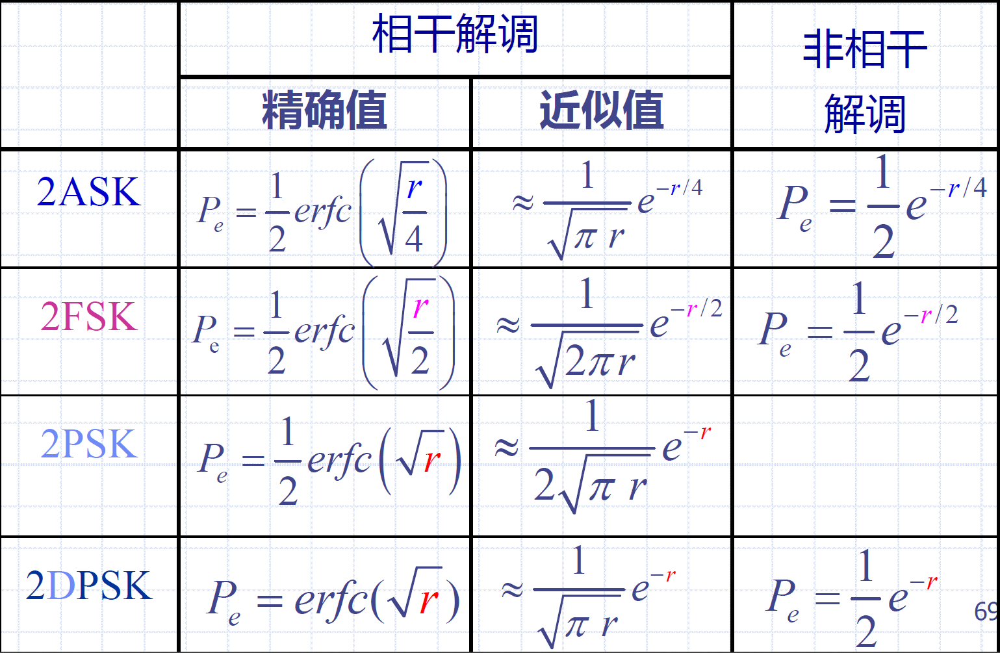
频带宽度：
- 2ASK：\(\frac{2}{T_B}\)
- 2FSK：\(|f_2-f_1|+\frac{2}{T_B}\)
- 2PSK：\(\frac{2}{T_B}\)
对信道特性变化的敏感性：
- 2ASK：\(b^*=\frac{a}{2}\)
- 2PSK：\(b^*=0\)
- 2FSK：不需要人为设置判决门限
7.4 多进制数字调制原理
码元传输速率 & 信息传输速率：
- 多进制码元进制数M，一个码元中包含k 比特信息，则有\(k=\log_2 M\)
- 设\(R_B\)为码元传输速率，\(R_b\)为信息传输速率，则有\(R_b=R_B\log_2 M\)
- 键控体制的信噪比\(r=\frac{a^2}{2\sigma_n^2}\)
- 若将码元功率平均分给多进制码元的每个比特，则每比特信噪比\(r_b=\frac{P_b}{\sigma_n^2}=\frac{r}{k}\)
多进制振幅键控MASK：
- \(B=\frac{2}{T_s}=2R_B=\frac{B_{2ASK}}{\log_2 M}\)
多进制频移键控MFSK：
- \(B=|f_M-f_1|+\frac{2}{T_s}\)
四进制相移键控4PSK：
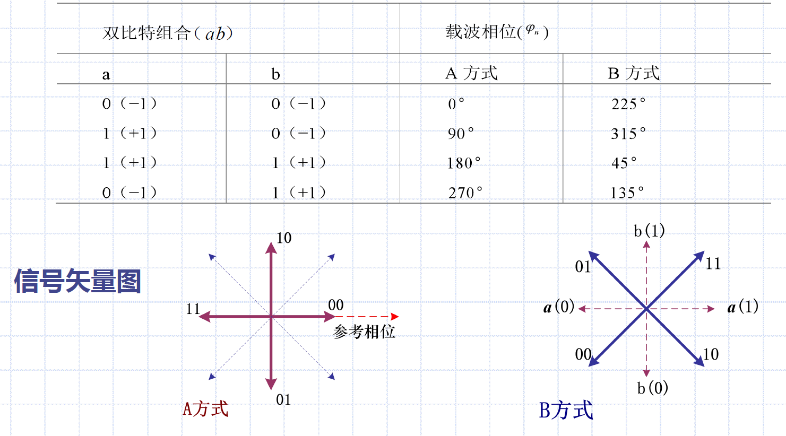
四进制差分相移键控4DPSK：
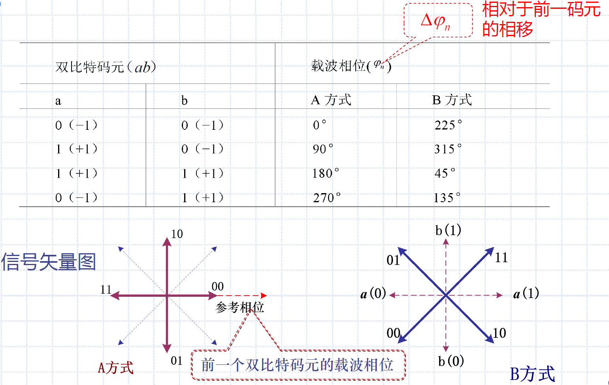
8 新型数字带通调制技术
8.1 正交振幅调制QAM
16QAM：
- \(d=\frac{\sqrt{2}A_M}{3}\approx 0.47A_M\)
- 此最小距离代表噪声容限大小
- 噪声容限越大，抗噪声性能越强
- 16QAM的噪声容限大于16PSK（\(d=2A_Msin(\frac{\pi}{16})=0.39A_M\)）
8.2 正交频分复用OFDM
OFDM：
- 为了保证N路子载波能够完全分离，要求子载波之间完全正交；子载波之间间隔满足条件：
- \(\Delta f=f_k-f_i=\frac{n}{T_B}\)
- \(\Delta f_{min}=\frac{1}{T_B}\)
9 最佳接收机设计
9.1 数字信号的统计特性
发送信号确定后，接收电压的随机性完全由噪声决定
- \(f_i(r)=\frac{1}{(\sqrt{2\pi}\sigma_n)^k}\exp\{-\frac{1}{n_0}\int_{0}^{T}[r(t)-s_i(t)]^2 dt\}\)
9.2 数字信号的最佳接收
最小分界点：\(\frac{P(1)}{P(0)}=\frac{f_0(r)}{f_1(r)}\)
判决准则：
- 若\(\frac{P(1)}{P(0)}<\frac{f_0(r)}{f_1(r)}\)，则判为0
- 若\(\frac{P(1)}{P(0)}>\frac{f_0(r)}{f_1(r)}\)，则判为1
最大似然准则：
- \(P(0)=P(1)\)时，
- 若\(f_1(r)<f_0(r)\)，则判为0
- 若\(f_1(r)>f_0(r)\)，则判为1
最大后验概率准则：
- 若\(f_r(1)<f_r(0)\)，则判为0（\(f_r(1)\)为收到r后发送1的概率）
- 若\(f_r(1)>f_r(0)\)，则判为1（\(f_r(0)\)为收到r后发送0的概率）
9.3 确知数字信号的最佳接收机
确知信号：其取值在任何时间否是确定的、可以预知的信号
- 在理想的恒参信道中接收的数字信号可以认为是确知信号
最佳接收机的原理：
- 若两个码元的能量相同
- 若\(W_0+\int_0^Tr(t)s_0(t)dt>W_1+\int_0^Tr(t)s_1(t)dt\)，则判决为\(s_0(t)\)
- 若\(W_0+\int_0^Tr(t)s_0(t)dt<W_1+\int_0^Tr(t)s_1(t)dt\)，则判决为\(s_1(t)\)
- \(\begin{cases}W_0=\frac{n_0}{2}\ln P(0) \\ W_1=\frac{n_0}{2}\ln P(1)\end{cases}\)
- 若两个码元的能量相同，且先验概率相同
- 若\(\int_0^Tr(t)s_0(t)dt>\int_0^Tr(t)s_1(t)dt\)，则判决为\(s_0(t)\)
- 若\(\int_0^Tr(t)s_0(t)dt<\int_0^Tr(t)s_1(t)dt\)，则判决为\(s_1(t)\)
9.4 确知数字信号最佳接收的误码率
码元能量：
- \(E_b=\int_{0}^{T_B}s_b^2(t)dt\)
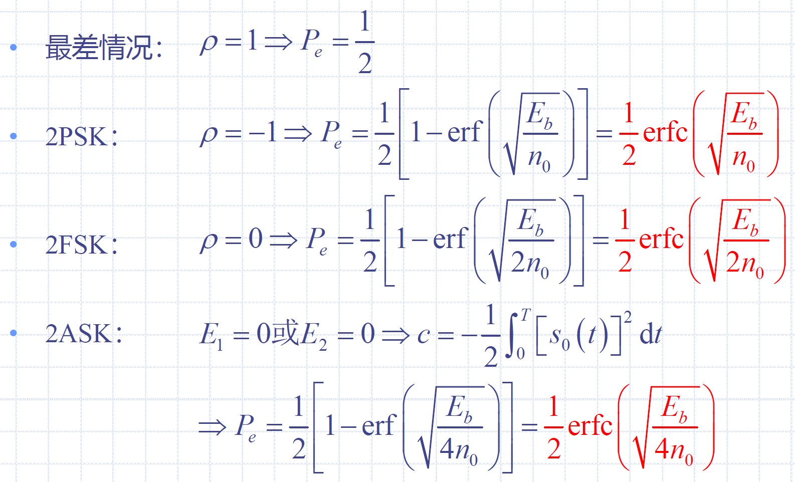
9.5 随相数字信号的最佳接收
随相信号：经过信道传输后码元相位带有随机性的信号
判决条件：
- 假设条件：码元的能量相同，先验概率相同，互不相关，2FSK信号
- 若接收矢量\(r\)使\(M_1^2<M_0^2\)，则判决为0
- 若接收矢量\(r\)使\(M_1^2>M_0^2\)，则判决为1
- \(\begin{cases}M_0=\sqrt{(\int_0^Tr(t)cos\omega_0t)^2+(\int_0^Tr(t)sin\omega_0t)^2} \\ M_1=\sqrt{(\int_0^Tr(t)cos\omega_1t)^2+(\int_0^Tr(t)sin\omega_1t)^2}\end{cases}\)
误码率：\(P_e=\frac{1}{2}\exp(-\frac{E_b}{2n_0})\)
9.6 起伏数字信号的最佳接收
起伏信号：包络随机起伏，相位也随机变化的信号
判决条件：
- 假设条件：码元的能量相同，先验概率相同，互不相关，2FSK信号，存在带限的高斯白噪声，码元相位概率密度均匀分布
- 若接收矢量\(r\)使\(M_1^2<M_0^2\)，则判决为0
- 若接收矢量\(r\)使\(M_1^2>M_0^2\)，则判决为1
- \(\begin{cases}M_0=\sqrt{(\int_0^Tr(t)cos\omega_0t)^2+(\int_0^Tr(t)sin\omega_0t)^2} \\ M_1=\sqrt{(\int_0^Tr(t)cos\omega_1t)^2+(\int_0^Tr(t)sin\omega_1t)^2}\end{cases}\)
误码率：\(P_e=\frac{1}{2+(\overline{E}/n_0)}\)
9.7 实际接收机和最佳接收机的性能比较
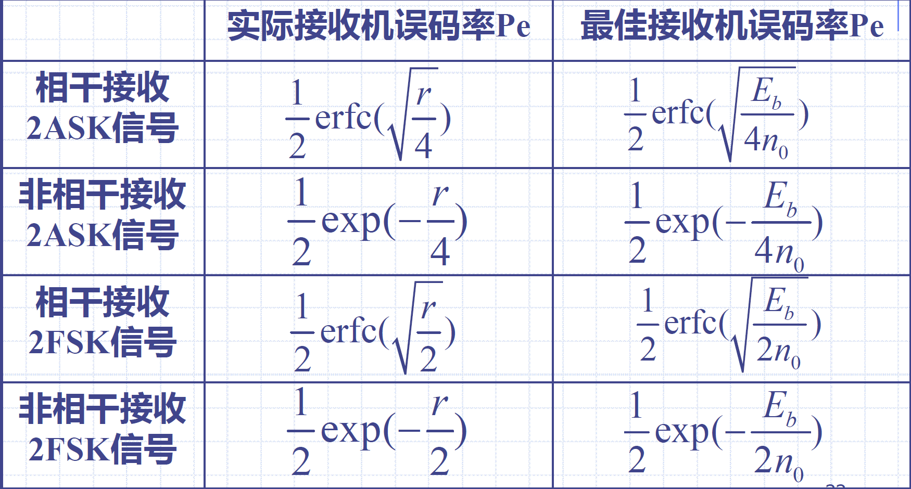
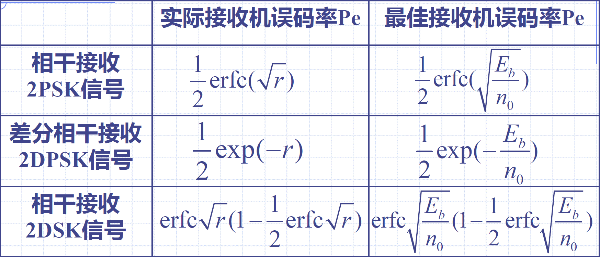
相关结论：
- 实际接收机中的信噪比相当于最佳接收机中码元能量和噪声功率谱密度之比
- 当系统带宽恰好满足奈奎斯特准则时二者相等
- 然而实际接收机一般不能达到理论极限带宽，实际接收机的性能总是比不上最佳接收机的性能
9.8 数字信号的匹配滤波接收法
匹配滤波器：使抽样时刻上输出信号信噪比最大的线性滤波器
匹配滤波接收法：详见教材P264
10 信源编码
10.1 概论
波形编码：
- 三个步骤：抽样、量化、编码
- 常用方法：脉冲编码调制PCM、差分脉冲编码调制DPCM、增量调制\(\Delta M\)
10.2 模拟信号的抽样
10.2.1 低通模拟信号的抽样定理
低通模拟信号的抽样定理：一个最高频率小于\(f_H\)的低通信号\(m(t)\)，可由其等间隔的抽样值唯一确定，抽样间隔\(T_s\)或抽样速率\(f_s\)应满足\(T_s\leq \frac{1}{2f_H}\)或\(f_s\geq 2f_H\)
- 如果以\(f_s=2f_H\)的速率进行均匀抽样，则由抽样序列\(m(nT_s)\)能够无失真地恢复出\(m(t)\)
- 重建原信号：将\(M_s(f)\)通过截止频率为\(f_H\)的理想低通滤波器，即可取出原信号
奈奎斯特间隔 & 奈奎斯特速率：
- 奈奎斯特间隔：\(T_s=\frac{1}{2f_H}\)
- 奈奎斯特速率：\(f_s=2f_H\)
10.2.1 带通模拟信号的抽样定理
带通模拟信号的抽样定理：设带通模拟信号频带在\(f_L\sim f_H\)之间，信号带宽\(B=f_H-f_L\)，则此带通信号所需最小抽样速率为\(f_s=2B(1+\frac{k}{n})\)，n为\((f_H/B)\)的整数部分，k为\((f_H/B)\)的小数部分
- \(f_L=0\)时，等同于低通抽样
- 当\(f_L\)很大时，为高频窄带信号，\(f_s\approx 2B\)
10.3 模拟脉冲调制
模拟脉冲振幅调制PAM：PAM是脉冲序列的幅度虽则\(m(t)\)变化的一种模拟脉冲调制方式
- 抽样信号频谱：\(M_s(f)=\frac{1}{T_s}\sum_{n=-\infty}^{\infty}M(f-nf_s)\)
- 抽样分类：理想抽样、实际抽样（自然抽样、平顶抽样）
自然抽样：样值脉冲幅度随着原信号\(m(t)\)的幅度而变
- 频谱：\(M_s(f)=M(f)*S(f)=\frac{A\tau}{T_s}Sa(\pi n \tau f_s)M(f-nf_s)\)
平顶抽样：每个脉冲值的顶部都是平坦的
- 频谱：\(M_H(f)=\frac{1}{T_s}\sum_{n=-\infty}^{\infty}H(f)M(f-nf_s)\)
10.4 抽样信号的量化
10.4.1 量化原理
量化：用有限个量化电平表示无限个抽样值
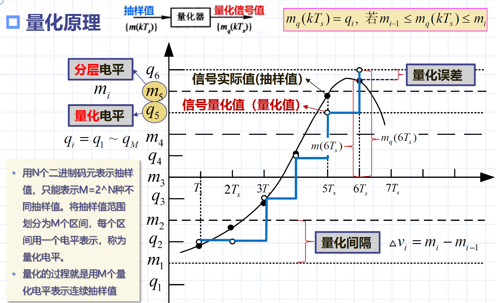
10.4.2 均匀量化
均匀量化：等间隔划分输入信号取值域
信号量噪比：信号功率与量化噪声之比
- 模拟抽样信号取值：\([a,b]\)
- 量化间隔：\(\Delta v=\frac{b-a}{M}\)
- 量化区间端点：\(m_i=a+i\Delta v\)
- 量化输出电平：\(q_i=\frac{m_i+m_{i-1}}{2}\)
- 量化噪声功率：\(N_q=E[(m_k-m_q)^2]=\int_a^b(m_k-m_q)^2f(m_k)dm_k=\sum_{i=1}^{M}\int_{m_{i-1}}^{m_i}(m_k-q_i)^2f(m_k)dm_k\)
- 抽样值\(m_k=m(kT_s)\)，量化信号值\(m_q=m_q(kT_s)\)，M为量化电平数，\(m_i=a+i\Delta v\)，\(q_i=a+i\Delta v-\frac{\Delta v}{2}\)
- 信号\(m_k\)平均功率：\(S=E(m_k)^2=\int_a^b x^2f(x)dx\)
- 信号量噪比：\(\frac{S}{N_q}=\frac{E(m_k)^2}{E[(m_k-m_q)^2]}\)
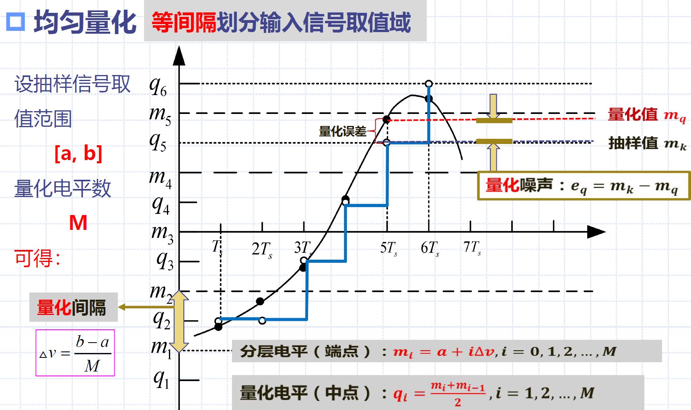
均匀量化器的小结论：一个均匀量化器的量化电平数为M，输入信号的抽样值在\([-a,a]\)区间具有均匀的概率密度，则该量化器的量化信噪比为\(\frac{S}{N_q}=M^2=2^{2N}\)，其中\(M=2^N\)
- \((\frac{S}{N_q})_{dB}=10\lg(2^{2N})\approx 6N (dB)\)
10.4.3 非均匀量化
非均匀量化：信号抽样值小，则量化间隔小；信号抽样值大，则量化间隔大
A压缩律：
\[
y=\begin{cases}
\frac{Ax}{1+lnA} & 0 \leq x \leq \frac{1}{A} \\
\frac{1+\ln Ax}{1+lnA} & \frac{1}{A} \leq x \leq 1 \\
\end{cases}
\]
- A：常数，决定压缩程度
- A=1，无压缩效果
- 实际常用A=87.6，使压缩特性曲线再原点附近斜率为16
- x：压缩器归一化输入电压 => \(x=\frac{压缩器输入电压}{压缩器可能的最大输入电压}\)
- y：压缩器归一化输出电压 => \(y=\frac{压缩器输出电压}{压缩器可能的最大输出电压}\)
13折线压缩特性：（A律的近似）
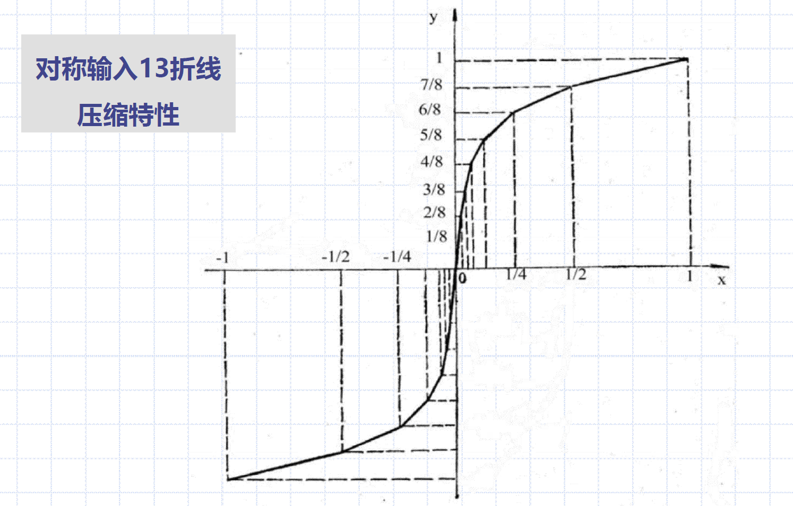
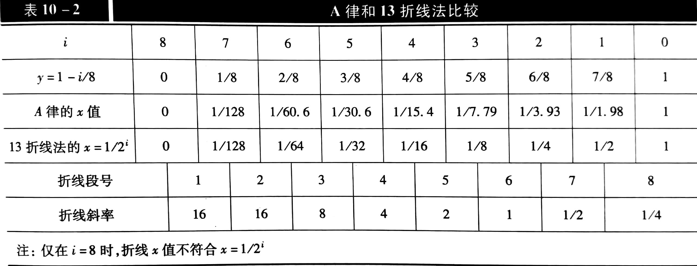
\(\mu\)压缩律与15折线压缩特性：
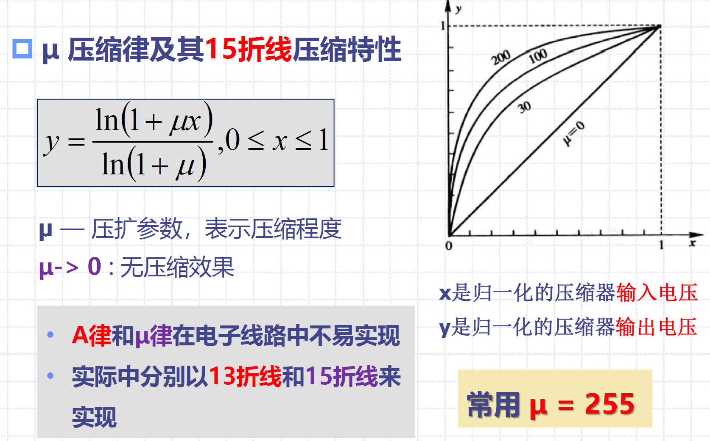
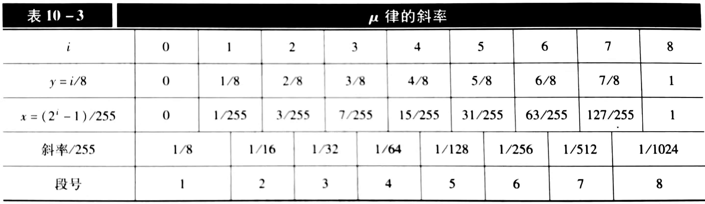
10.5 脉冲编码调制
脉冲编码调制：将模拟信号的抽样量化值变成二进制信号，是模拟信号数字化方法之一
- 过程：抽样、量化、编码
- PCM编码采用非均匀量化8位折叠码
A律13折线PCM编码：正负各8段，每段16个量化级，共256个量化级
- 编码组成：
- \(C_1\)极性码：表示样值的极性，正1负0
- \(C_2C_3C_4\)段落码：表示样值幅度所在段落
- \(C_5C_6C_7C_8\)段内码：对应段内的16个量化级
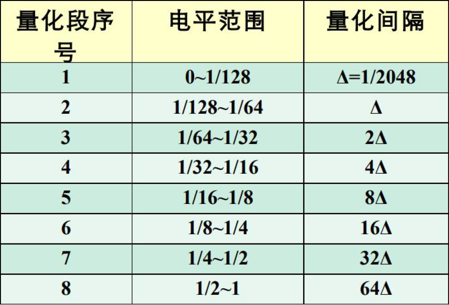
PCM系统中噪声的影响：量化噪声 & 加性噪声
- 加性噪声：\(\frac{S_o}{N_a}=\frac{M^2}{2^{2(N+1)}P_e}\)
- 量化噪声：\(\frac{S_o}{N_q}=M^2=2^{2N}\)
- 总输出信噪比：\(\frac{S_o}{N}=\frac{2^{2N}}{1+2^{2(N+1)}P_e}\)
- 大信噪比：\(2^{2(N+1)}P_e<<1\)，\(\frac{S_o}{N}\approx 2^{2N}\)
- 小信噪比：\(2^{2(N+1)}P_e<<1\)，\(\frac{S_o}{N}\approx \frac{1}{4P_e}\)
10.6 差分脉冲编码调制
10.7 增量调制
增量调制原理：当DPCM中量化器的量化电平数取2时，即为增量调制系统
- 过载量化噪声：发生在输入信号斜率绝对值过大的情况下
- 阶梯波的最大可能斜率（译码器最大跟踪斜率）：\(k=\frac{\sigma}{T_s}=\sigma f_s\)
- \(\sigma\)为量化台阶，\(f_s\)为抽样频率
- 最小编码电平：\(\frac{\sigma}{2}\)
- 保证不过载的临界振幅：\(A_{max}=\frac{\sigma\cdot f_s}{\omega_k}\)
- 最大信号量噪比：\(\frac{S_{max}}{N_q}=\frac{3}{8\pi^2}(\frac{f_s^3}{f_k^2f_m})\approx0.04\frac{f_s^3}{f_k^2f_m}\)
10.8 时分复用
时分复用TDM：利用抽样的间隔时间传输多路抽样信号
- TDM & FDM：
- TDM：各路信号在时域分开，频域混叠
- FDM：各路信号在频域分开，时域混叠
- E体系、T体系
10.9 矢量量化
详见教材P312
10.12 数字数据压缩编码
Kraft不等式：对于D元字母表上的即时可译码，码字长度\(l_1,l_2,...,l_m\)必定满足不等式\(\sum_{i=1}^{m}D^{-l_i}\leq 1\)
- 任意唯一可译码的码字长度也必然满足Kraft不等式
最优码：码字的最小期望长度为\(L^*=\sum p_il_i=-\sum p_i\log_D p_i=H_D(X)\)
- 最优码的码长满足以下界定定理：\(H_D(X)\leq L\leq H_D(X)+1\) => 香农第一定理（无失真信源编码）
霍夫曼编码：无前缀变长码，即时可译码，对给定熵的信源能够达到最小平均码长，是最优码
- 过程：信源缩减 -> 分配码字
压缩编码性能指标：
- 压缩比：压缩前每个字符的平均码长与压缩后每个字符的平均码长之比
- 编码效率：编码后的字符平均信息量（熵）与编码平均码长之比
11 差错控制编码
11.1 概论
11.2 纠错编码的基本原理
编码效率（码率） & 冗余度：
- 编码效率（码率）：\(R_c=\frac{k}{n}\)，k为信息码元位数，n为编码后码元总位数
- 冗余度：监督码元(n-k)与信息码元位数k之比
分组码：将信息码每k个分为1组，按照一定规则，为每组信息码附加r个监督码的编码称为分组码，编码后每组长度为n=k+r
- 分组码符号表示：(n, k)
- 码重：码组中1的个数
- 码距（汉明距离）：两个码组中对应位上数字不同的位数
- 最小码距：某种编码中个码组之间距离最小值
码距与纠检错能力：
- 对于(n, k)分组码的纠检错能力，有以下结论：
- 检测e个错码，要求最小码距\(d_0\geq e+1\)
- 纠正t个错码，要求最小码距\(d_0\geq 2t+1\)
- 检测e个错码、纠正t个错码，要求最小码距\(d_0\geq e+t+1, \ \ e>t\)
11.3 纠错编码的性能
传输速率与信噪比：\(\frac{E_b}{n_0}=\frac{P_s T}{n_0}=\frac{P_s}{n_0(1/T)}=\frac{P_s}{n_0R_B}\)
11.4 简单的实用编码
奇偶校验码：
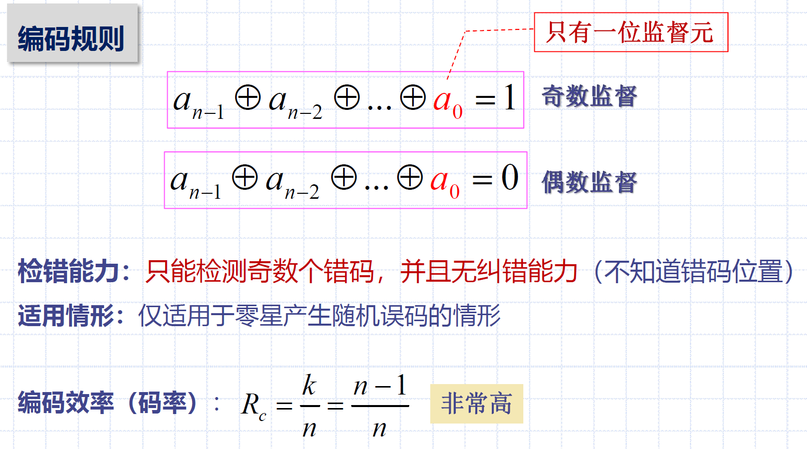
二维奇偶监督码：
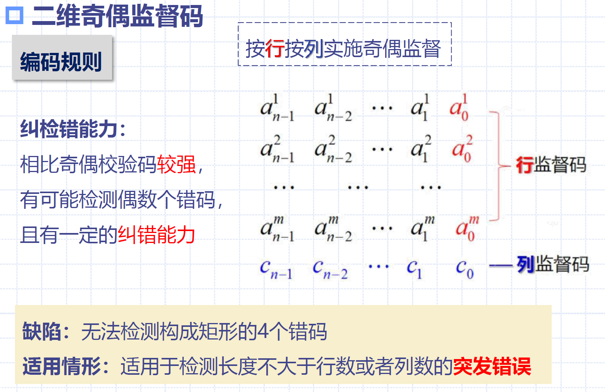
恒比码（等重码）：
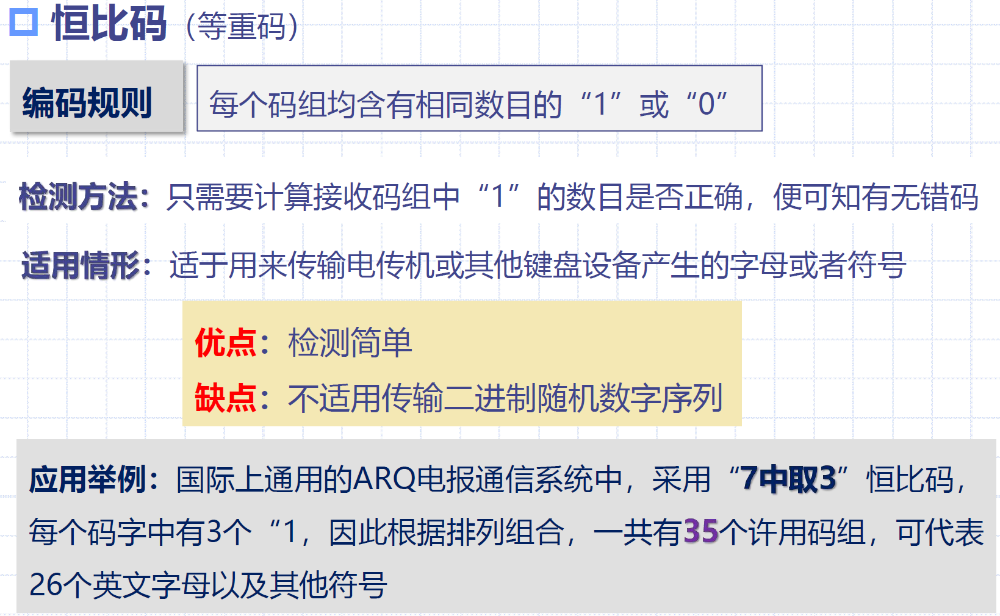
正反码：
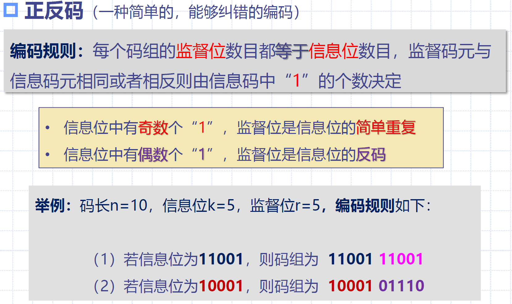
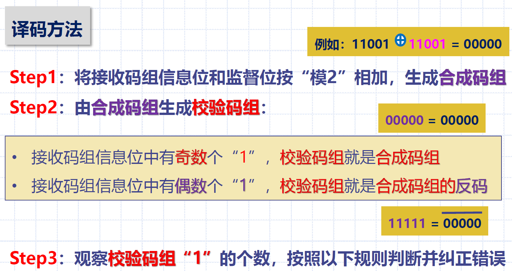
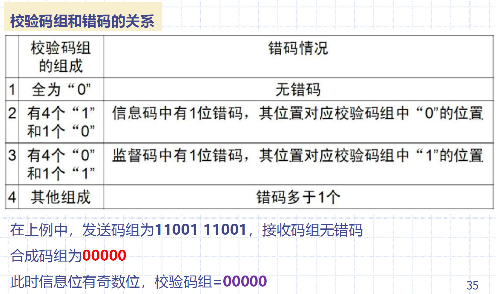
11.5 线性分组码
监督位与错误位置的关系：对于(n, k)线性分组码，若希望用\(r=n-k\)个监督码构造出r个监督关系式来指出一位错码的n种可能位置，则r需要满足：\(2^r-1\geq n\)或\(2^r\geq k+r-1\)
- r个监督关系式能够指示一位错码的\((2^r-1)\)个可能位置
11.5.2 汉明码
汉明码：当\(2^r-1=n\)时，构造的线性分组码称为汉明码
- \((n,k)=(2^r-1,2^r-r-1)\)
- 纠1位错的高效的线性分组码
(7, 4)汉明码的构造：
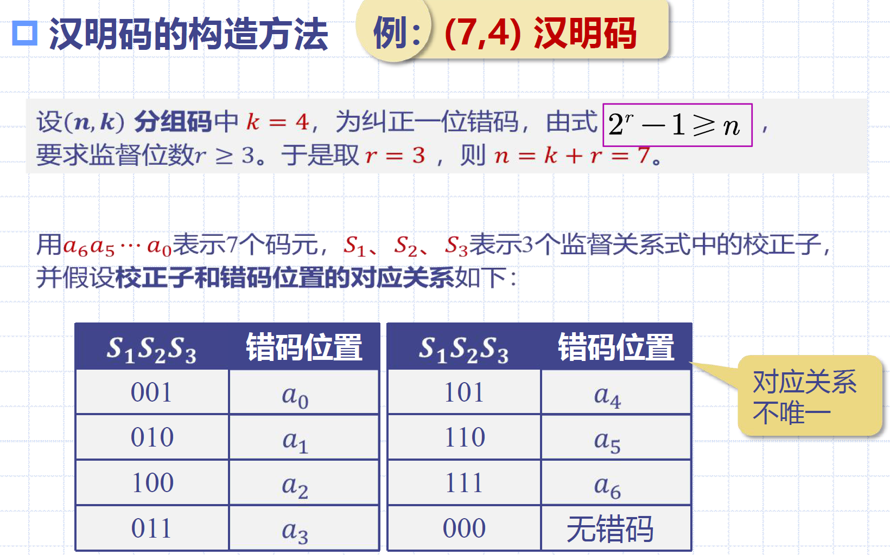
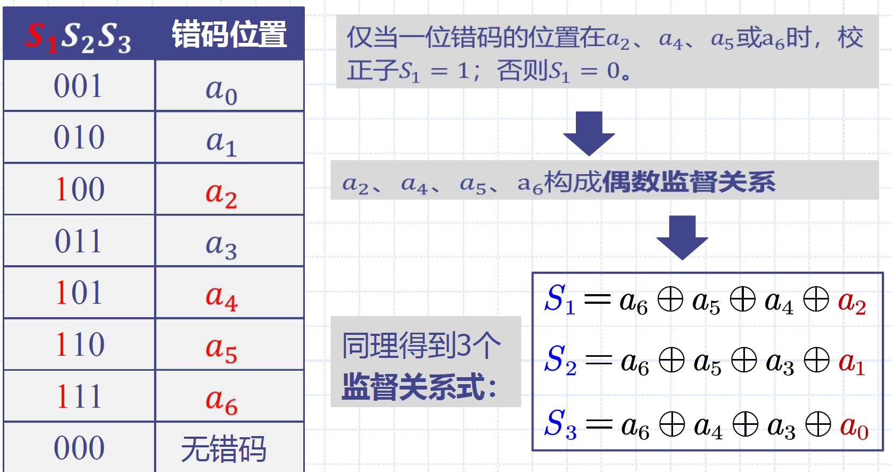
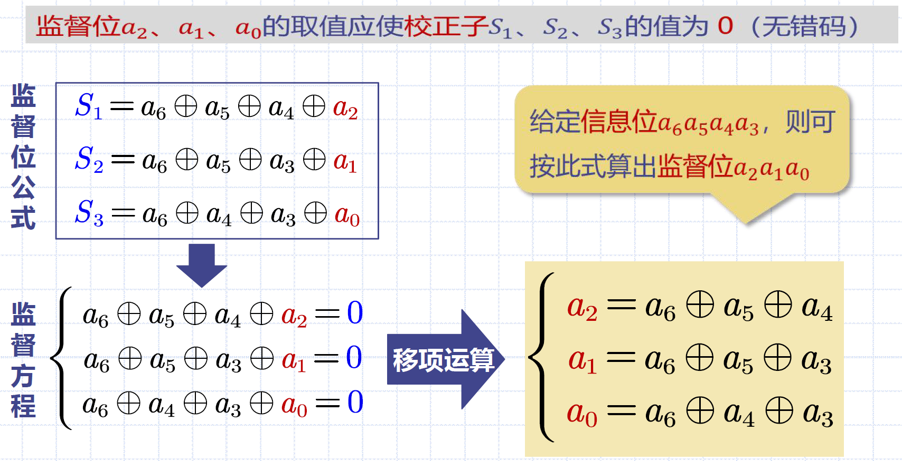
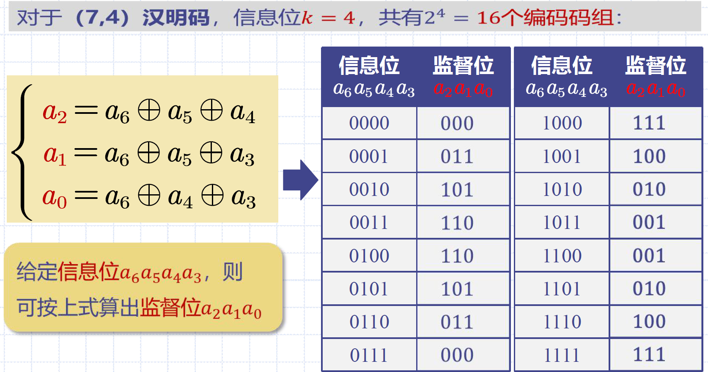
汉明码的检错纠错：
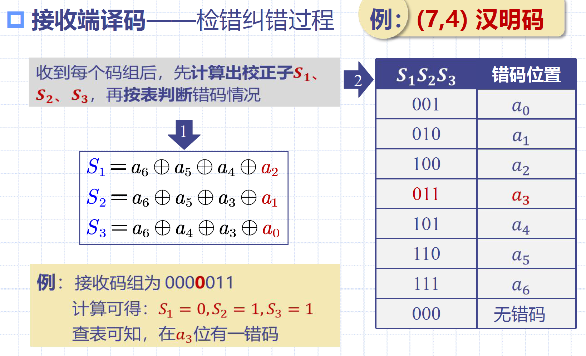
汉明码的特性：
- 监督位数：\((n,k)=(2^r-1,2^r-r-1), \ \ r\geq 3\)
- 最小码距：\(d_0=3\) => 纠1或检2
- 编码效率：\(R_c=\frac{k}{n}=\frac{n-r}{n}=1-\frac{r}{n}\)
- 当n很大r很小时，\(R_c\approx 1\)
11.5.3 监督矩阵H与生成矩阵G
线性码：按照一组线性方程构成的代数码，即每个码字的监督位时信息位的线性组合
监督矩阵H & 生成矩阵G：
- 监督矩阵H给定，则编码时监督位和信息位的关系就完全确定
- 生成矩阵给定，则编码的方法就完全确定
- \(G=[I_k \ Q]\)称为典型生成矩阵
- \(H=[P \ I_r]\)称为典型监督矩阵
- 系统码：由典型生成矩阵得出的码组A中，信息位的位置不变，监督位附加其后
\[
\begin{align}
&H=\begin{bmatrix}
1 & 1 & 1 & 0 & \vdots & 1 & 0 & 0 \\
1 & 1 & 0 & 1 & \vdots & 0 & 1 & 0 \\
1 & 0 & 1 & 1 & \vdots & 0 & 0 & 1 \\
\end{bmatrix}=[P \ I_r] \\
&P=\begin{bmatrix}
1 & 1 & 1 & 0 \\
1 & 1 & 0 & 1 \\
1 & 0 & 1 & 1 \\
\end{bmatrix} \\
&Q=P^T=\begin{bmatrix}
1 & 1 & 1 \\
1 & 1 & 0 \\
1 & 0 & 1 \\
0 & 1 & 1 \\
\end{bmatrix} \\
&G=[I_k \ Q]=\begin{bmatrix}
1 & 0 & 0 & 0 & \vdots & 1 & 1 & 1 \\
0 & 1 & 0 & 0 & \vdots & 1 & 1 & 0 \\
0 & 0 & 1 & 0 & \vdots & 1 & 0 & 1 \\
0 & 0 & 0 & 1 & \vdots & 0 & 1 & 1 \\
\end{bmatrix} \\
&\begin{bmatrix}a_6 & a_5 & a_4 & a_3 & a_2 & a_1 & a_0\end{bmatrix}
\cdot H^T =
\begin{bmatrix}0 & 0 & 0\end{bmatrix}\\
&\begin{bmatrix}a_6 & a_5 & a_4 & a_3\end{bmatrix}
\cdot Q =
\begin{bmatrix}a_2 & a_1 & a_0\end{bmatrix}\\
&\begin{bmatrix}a_6 & a_5 & a_4 & a_3\end{bmatrix}
\cdot G =
\begin{bmatrix}a_6 & a_5 & a_4 & a_3 & a_2 & a_1 & a_0\end{bmatrix}
\end{align}
\]
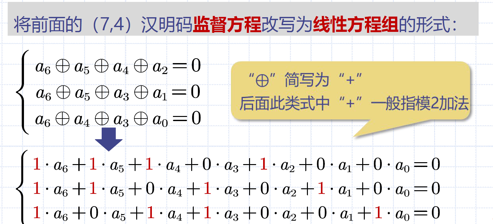
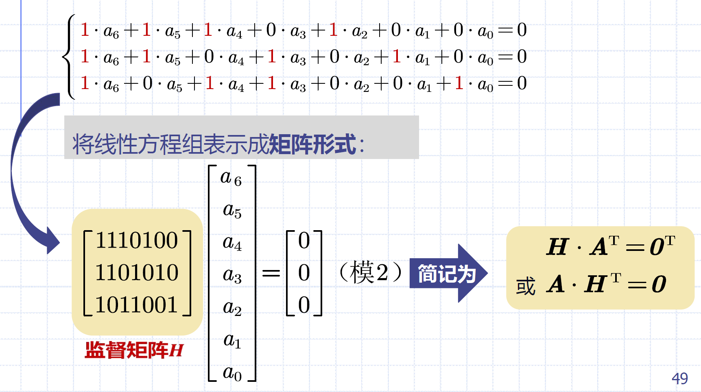
错误图样和校正子：
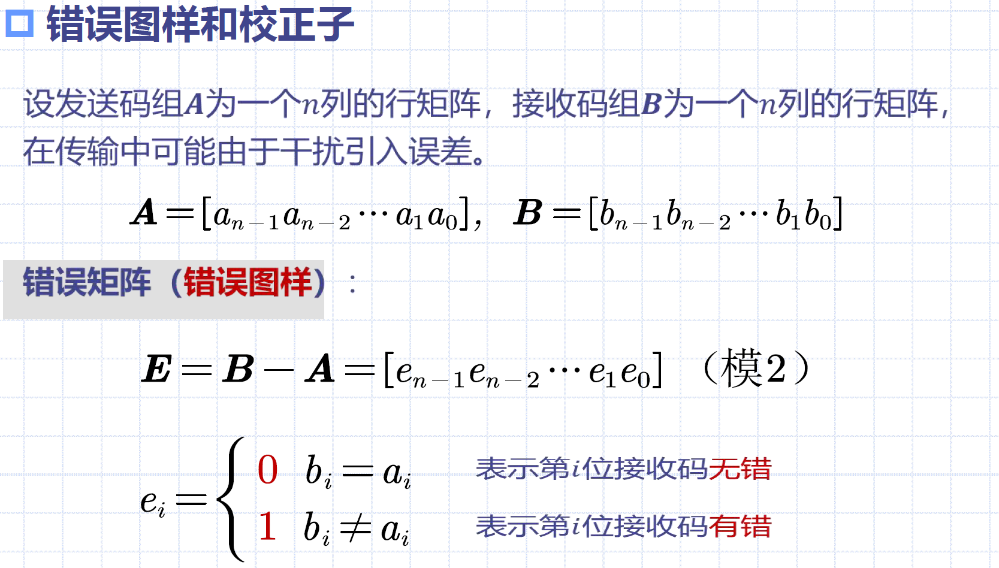
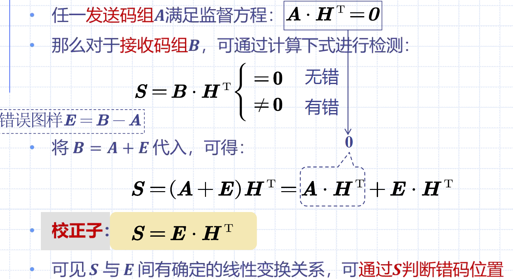
(n, k)线性分组码译码步骤：
- 由接收的码组B计算\(S=B\cdot H^T\)
- 由S找到错误图样E
- 由公式A=B+E得到译码器输出码组
线性分组码性质：
- 封闭性：一种线性码中的任意两种许用码组之和仍为许用码组
- 最小距离：码的最小距离即为码的最小重量（除全0码）
11.6 循环码
详见教材P344
11.7 卷积码
详见教材P354